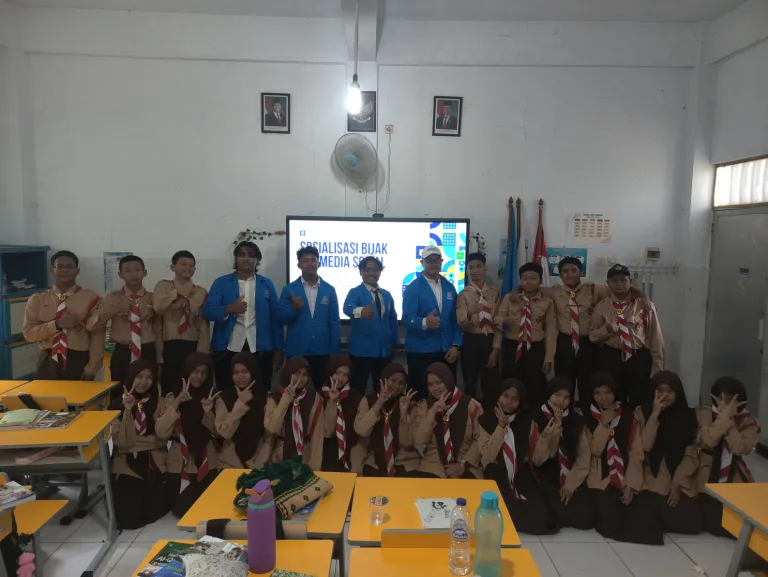
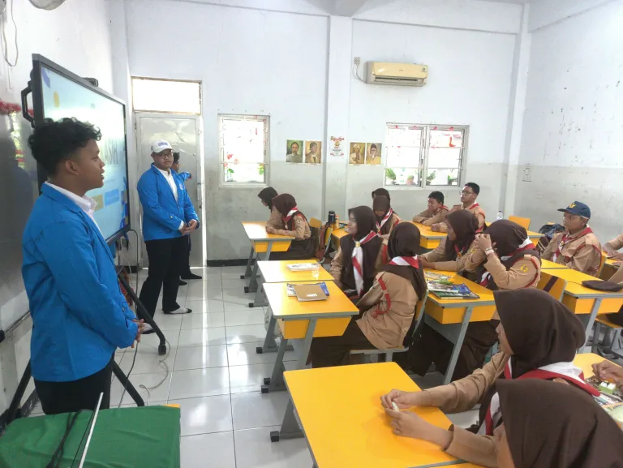
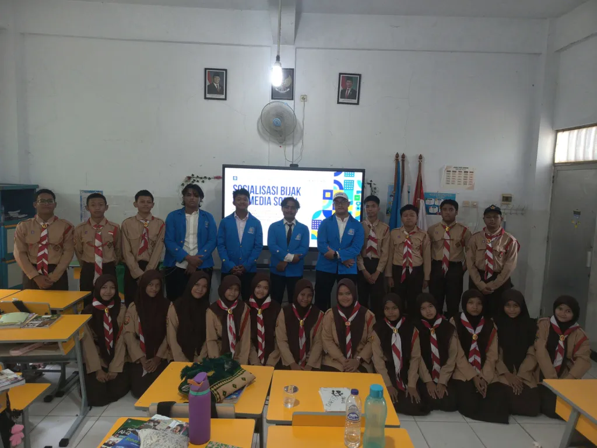

Mahasiswa RPL UBSI Kaliabang Gelar Sosialisasi Bijak Bermedia Sosial dan Pencegahan Cyberbullying di SMPIT Kun Fayakun
Mengimplementasikan nilai Sila ke-2 Pancasila di ruang digital, Kelompok 4 (Imperium) Program Studi Rekayasa Perangkat Lunak membekali siswa/i tingkat menengah dengan pemahaman etika siber serta langkah pencegahan perundungan daring.

BEKASI, KABUPATEN BEKASI — Tingginya intensitas penggunaan gawai dan media sosial di kalangan pelajar menuntut pemahaman literasi digital sejak bangku sekolah. Menyikapi hal tersebut, mahasiswa Program Studi Rekayasa Perangkat Lunak (RPL) yang tergabung dalam Kelompok 4 — Imperium, Universitas Bina Sarana Informatika (UBSI) Kampus Kaliabang, menyelenggarakan kegiatan Pengabdian kepada Masyarakat (PKM) bertajuk “Sosialisasi Bijak Bermedia Sosial dan Pencegahan Cyberbullying pada Siswa/i SMPIT Kun Fayakun”.
Kegiatan yang berlokasi di SMPIT Kun Fayakun, Jl. Villa Gading Harapan, Kelurahan Kebalen, Kecamatan Babelan, Kabupaten Bekasi ini menyasar siswa-siswi tingkat Sekolah Menengah Pertama (SMP) yang berada pada fase transisi pencarian jati diri dan aktif berinteraksi di ruang digital.
Program edukasi ini dirancang sebagai bentuk implementasi nyata nilai-nilai Pancasila dalam kehidupan sehari-hari, khususnya Sila ke-2: Kemanusiaan yang Adil dan Beradab. Melalui pendekatan tersebut, para pelajar diajak memahami bahwa setiap aktivitas di media sosial memiliki batasan etika, tanggung jawab moral, serta konsekuensi hukum yang berlaku di Indonesia.
Penyuluhan Interaktif dan Pemutaran Video Edukatif
Berdasarkan hasil observasi awal tim pelaksana bersama pihak sekolah, pelajar tingkat SMP memiliki kerentanan tinggi terhadap kasus perundungan siber (cyberbullying)—baik berpotensi menjadi korban maupun tanpa sadar menjadi pelaku akibat rendahnya empati digital, seperti melontarkan komentar negatif, ejekan, maupun menyebarkan informasi yang merugikan orang lain.
Agar materi mudah dipahami oleh peserta didik, tim Kelompok 4 (Imperium) menyusun metode penyampaian secara komunikatif dalam beberapa sesi utama:
- Pemaparan Materi Etika Digital & Nilai Pancasila: Pembekalan mengenai penggunaan media sosial secara sehat, menjaga jejak digital, serta penerapan nilai kemanusiaan Sila ke-2 Pancasila saat berinteraksi di dunia maya.
- Pemutaran Video Pendek Edukatif: Tayangan studi kasus mengenai bentuk-bentuk cyberbullying di kalangan remaja beserta dampak psikologis dan sosial bagi korban.
- Diskusi Santai & Sesi Tanya Jawab: Ruang dialog terbuka bagi siswa/i untuk berbagi pengalaman bermedia sosial serta membahas langkah tepat dalam menyikapi perundungan daring.
- Icebreaking & Kuis Evaluasi: Permainan penyegar suasana dan kuis singkat berhadiah untuk mengukur pemahaman siswa terhadap materi sosialisasi.
“Pelajar usia SMP sangat dekat dengan media sosial setiap harinya, namun sering kali belum menyadari bahwa satu komentar negatif atau candaan di dunia maya bisa berdampak serius bagi kondisi mental teman sebayanya. Lewat kegiatan ini, kami ingin mendorong siswa/i SMPIT Kun Fayakun agar lebih bijak, beretika, dan saling menghargai di ruang digital.”
Daffa Andhika Viananda — Ketua Pelaksana Kelompok 4 (Imperium), RPL UBSI Kampus Kaliabang
Sinergi Kampus dan Sekolah Mitra
Pelaksanaan kegiatan mendapat dukungan dari pihak SMPIT Kun Fayakun yang memfasilitasi ruang kelas serta sarana presentasi selama acara berlangsung. Di bawah bimbingan dosen Universitas Bina Sarana Informatika, Lina Ayu Safitri, S.E., M.M., tim Kelompok 4 — Imperium yang beranggotakan Daffa Andhika Viananda, Daffa Athallah Asy Syakur, Adam Purwo Pratama, dan Hildan Hasan Dipraja menjalankan seluruh tahapan program mulai dari survei lapangan, penyusunan materi, pelaksanaan sosialisasi, hingga evaluasi kegiatan.
“Kami menyambut baik inisiatif mahasiswa UBSI Kampus Kaliabang yang hadir memberikan edukasi literasi digital secara langsung kepada siswa-siswi kami. Materi mengenai etika bermedia sosial dan pencegahan perundungan siber ini sangat relevan dengan pembinaan karakter peserta didik di sekolah.”
Perwakilan Dewan Guru SMPIT Kun Fayakun — Babelan, Kabupaten Bekasi


Berdasarkan hasil evaluasi kuis singkat dan tanggapan dewan guru di akhir sesi, kegiatan ini dinilai efektif meningkatkan kesadaran siswa/i SMPIT Kun Fayakun untuk menyaring informasi, menjaga tutur kata di kolom komentar, serta berani melapor apabila menemukan tindakan perundungan di media sosial.
Tentang Kegiatan Pengabdian kepada Masyarakat (PKM):
Kegiatan ini merupakan bagian dari implementasi Tri Dharma Perguruan Tinggi oleh mahasiswa Program Studi Rekayasa Perangkat Lunak (RPL) Kelompok 4 — Imperium, Universitas Bina Sarana Informatika (UBSI) Kampus Kaliabang, Bekasi, dalam rangka mengamalkan nilai-nilai Pancasila melalui kontribusi edukatif kepada lingkungan pendidikan.
Kontak Tim Pelaksana:
Daffa Andhika Viananda (Ketua Pelaksana Kelompok 4 — Imperium) • viananda.daffa@gmail.com